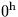
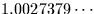

Conversion from universal time UT1 to Greenwich mean
sidereal time.
CALL:
D = sla_GMST (UT1)
GIVEN:
UT1
D
universal time (strictly UT1) expressed as
modified Julian Date (JD-2400000.5)
RETURNED:
sla_GMST
D
Greenwich mean sidereal time (radians)
NOTES:
1.
The IAU 1982 expression
(see page S15 of the 1984 Astronomical
Almanac) is used, but rearranged to reduce rounding errors. This
expression is always described as giving the GMST at UT;
in fact, it gives the difference between the
GMST and the UT, which happens to equal the GMST (modulo
24 hours) at UT each day. In sla_GMST, the
entire UT is used directly as the argument for the
canonical formula, and the fractional part of the UT is
added separately; note that the factor  does
not appear.
2.
See also the routine sla_GMSTA, which
delivers better numerical
precision by accepting the UT date and time as separate arguments.